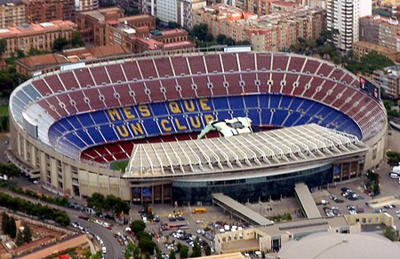

Sejarah

Didirikan pada tahun 1899 oleh sekelompok pemain Swiss, Inggris, Jerman dan Catalonia yang dipimpin oleh Joan Gamper, klub telah menjadi simbol budaya Catalonia dan Catalanisme, yang mempunyai motto "Més que un club" (Lebih dari sebuah klub). Tidak seperti banyak klub sepak bola lainnya, para pendukung memiliki dan mengoperasikan Barcelona. Ia adalah klub sepak bola kedua terkaya di dunia dalam hal pendapatan, dengan omzet tahunan sebesar €560,8 juta dan kedua yang paling berharga, senilai $3,56 miliar.[2][3] Lagu kebangsaan resmi Barcelona adalah "Cant del Barça", yang ditulis oleh Jaume Picas dan Josep Maria Espinas.[4] Secara tradisional, Barcelona mengenakan kostum merah dan biru, sehingga klub ini dijuluki Blaugrana.
Klub ini masuk menjadi peserta Primera División (Divisi Utama) sejak tahun 1928, dan bersama-sama Real Madrid dan Athletic Bilbao menjadi tim yang tak pernah terdegradasi ke Segunda División (Divisi Dua). Klub ini juga menjadi klub yang menjuarai liga Spanyol pertama kali. Dengan persembahan 27 gelar Liga Spanyol, 31 gelar Copa del Rey, 14 gelar Piala Super Spanyol, 5 gelar Liga Champions Eropa, 4 gelar Piala Winners UEFA, 4 gelar Piala Super Eropa, FC Barcelona menjadi salah satu tim tersukses di Spanyol, Eropa, dan dunia. Bukti paling nyata ketika pada tahun 2009 FC Barcelona berhasil menjadi klub Spanyol pertama yang berhasil meraih gelar treble (juara La Liga, Copa del Rey, dan Liga Champions). Dilanjutkan dengan raihan gelar Piala Super Spanyol, Piala Super Eropa dan Piala Dunia Antarklub FIFA untuk melengkapi raihan gelarnya menjadi Sextuples. Barcelona merupakan klub sepak bola pertama di dunia yang melakukan raihan ini. Penggemar Barca juga sering disebut Culés.
Barcelona adalah salah satu tim yang paling didukung di dunia, dan memiliki media sosial terbesar di antara tim olahraga lainnya.[5][6][7] Pemain Barca telah memenangkan catatan jumlah penghargaan Ballon d'Or (12), serta catatan jumlah penghargaan FIFA World Player of the Year (7). Pada tahun 2010, klub membuat sejarah ketika tiga pemain yang datang melalui akademinya (Messi, Iniesta & Xavi) terpilih sebagai tiga pemain terbaik di dunia, setelah mengantongi tempat teratas di FIFA Ballon d'Or, prestasi belum pernah terjadi sebelumnya untuk pemain dari sekolah sepak bola yang sama.
Spotify Camp Nou

Kapasitas stadion ini menampung hingga 99,354 orang, yang mana itu adalah stadion terbesar di Spanyol dan Eropa, dan stadion asosiasi sepak bola terbesar ke-4 di dunia dalam kapsitas.
Pada 15 Maret 2022, diumumkan bahwa layanan streaming musik Spotify telah mencapai kesepakatan dengan FC Barcelona untuk memperoleh hak penamaan stadion dalam kesepakatan senilai $310 juta. Stadion ini telah berganti nama menjadi Spotify Camp Nou pada 25 Juli 2022, menyusul persetujuan perjanjian sponsorship dengan Spotify oleh Majelis Luar Biasa Anggota Delegasi FC Barcelona pada 3 April 2022.
Pada April 2022, diumumkan bahwa renovasi stadion dimulai pada Juni 2022 setelah musim 2021-2022 berakhir.
Prestasi

Hingga saat ini belum ada satu pun tim di dunia yang mampu merebut 6 trofi dalam satu musim kompetisi, kecuali Barcelona. Klub asal Catalan itu muncul sebagai tim superior setelah menutup musim 2008-09 dengan torehan prestasi sensasional.
Pep Guardiola menjadi aktor kunci kesuksesan Barcelona pada periode tersebut, di mana Guardiola datang ke Camp Nou untuk menggantikan Frank Rijkaard, yang melatih Blaugrana sejak 2003 hingga 2008.
Bahkan, Real Madrid yang musim lalu mengkampanyekan untuk meraih semua gelar bergengsi dalam satu musim gagal menyamai rekor 6 trofi milik Barcelona. Pasalnya skuad asuhan Carlo Ancelotti itu hanya mampu menjuarai Copa del Rey dan Liga Champions, serta Piala Super Eropa dan Piala Dunia Antarklub.
Gagalnya Madrid menyamai rekor perolehan trofi Barca karena Los Merengues tak bisa merebut gelar La Liga Spanyol musim lalu setelah hanya menempati peringkat ketiga di akhir musim dengan perolehan 87 poin, sementara Atletico Madrid yang menjadi juara, mengumpulkan 90 poin diikuti Barcelona di tempat kedua yang meraup poin sama dengan Madrid namun unggul selisih gol.
Selanjutnya, tim ibu kota itu pun tak berhasil menyabet mahkota Piala Super Spanyol setelah di partai final kalah agregat 2-1 atas Los Rojiblancos. Leg pertama Los Blancos hanya mampu bermain imbang 1-1, namun di leg kedua pasukan Don Carlo menyerah dari rival sekotanya itu dengan skor 0-1.
Rekor raihan 6 trofi Blaugrana dalam satu musim kompetisi pun belum terpecahkan hingga sekarang. Tim dengan filosofi 'tiki-taka' ini terlebih dahulu memberondong Treble Winners lalu diikuti oleh 3 trofi berikutnya yaitu Piala Super Eropa, Piala Super Spanyol, dan Piala Dunia Antarklub.
Copa Del Rey
Trofi Copa Del Rey menjadi trofi pertama yang masuk ke lemari Barcelona di musim 2008-09. Di partai final, tim besutan Pep Guardiola mampu mengkandaskan Athletic Bilbao 4-1 di Stadion Mestalla, Valencia. Gol El Barca masing-masing dicetak oleh Yaya Toure, Lionel Messi, Bojan Krkic dan Xavi Hernandez. Sementara Bilbao hanya mampu melesakkan satu gol melalui Gaizka Toquero. Trofi Copa Del Rey ini menjadi catatan tersendiri bagi Pep. Pada musim 2008-09, gelar Copa Del Rey menjadi persembahan awal pelatih yang pernah bermain untuk AS Roma ini saat pertama kali menukangi Barca. Dan di musim 2011/2012, Trofi Copa Del Rey menjadi salam perpisahan Pep pada klub yang sudah membesarkan namanya tersebut.
UEFA Champions League
Superioritas Barcelona juga tidak bisa dibendung di ajang UEFA Champions League. Meskipun tim asuhan Pep itu bertemu tiga raksasa Inggris sekaligus yaitu Manchester United, Chelsea, dan Arsenal. Namun, Carles Puyol dkk bisa menang dramatis atas Chelsea melalui gol telat Andres Iniesta yang sekaligus menjadikannya pahlawan di babak semifinal untuk membawa Barcelona lolos ke partai final di Roma menghadapi Manchester United. Di stadion Olimpico, armada Catalan membungkam juara bertahan Manchester United 2-0 berkat gol Samuel Eto'o dan Lionel Messi.
La Liga
Di awal musim 2008-09, tak sedikit orang yang meragukan kemampuan Pep dalam meramu taktik. Kekalahan 0-1 atas Numancia pada pertandingan perdana La Liga membuat pria plontos ini semakin dihujani kritik. Banyak kalangan yang menyebut Blaugrana tidak akan mudah menjalani musim dalam masa transisi, apalagi untuk meraih satu trofi. Namun, kejeniusan pelatih berdarah Spanyol ini membuat Barcelona mampu menghancurkan rival abadi mereka Real Madrid dalam kemenangan back to back di partai El Clasico La Liga musim 2008-09. Menang 2-0 di Camp Nou, kemudian El Barca mempermalukan Los Blancos dengan membantai Raul Gonzalez dkk dengan skor telak 6-2 di Santiago Bernabeu. Di akhir musim pelatih berumur 43 tahun ini sukses mempertahankan gelar La Liga Spanyol dengan torehan 87 poin dari 38 pertandingan dan nyaman duduk di peringkat pertama jauh mengungguli Real Madrid di posisi kedua yang hanya memperoleh 78 poin.
UEFA Super Cup
Di ajang ini, status El Barca sebagai kampiun UEFA Champions League ditantang oleh pemilik gelar UEFA European League, Shakhtar Donetsk di partai puncak. Laga ini dihelat di Stade Louis II, Monaco. Barcelona menang tipis 1-0 melalui gol tunggal Pedro Rodriguez di menit-115 extra time yang memanfaatkan umpan Lionel Messi sukses mengantarkan Barcelona menjadi juara dan berhak atas mahkota UEFA Super Cup 2008-09. Pedro yang saat itu baru berusia 22 tahun hanya menjadi pemain pengganti dari Zlatan Ibrahimovic yang ditarik keluar pada menit ke-80.
Spanish Super Cup
Barcelona berhasil menguasai Spanyol setelah memastikan gelar tambahan Spanish Super Cup berkat kemenangan agregat 5-1 atas Athletic Bilbao. Pada leg pertama tim yang bermarkas di Camp Nou itu sukses melibas Bilbao 2-1, situasi ini berlanjut di leg kedua ketika Messi dkk membungkam Bilbao dengan skor telak 3-0.
FIFA Club World Cup
Gelar juara FIFA Club World Cup di Uni Emirat Arab adalah penutup tahun sempurna Barca. Bertempur di Zayed Sports City, Abu Dhabi, Uni Emirat Arab, El Barca sanggup menumbangkan kampiun Piala Libertadores, Estudiantes 2-1 dan mengukuhkan tim Catalan sebagai yang terbaik di jagat raya. Gol kemenangan Barcelona dicetak oleh Pedro Rodriguez dan Lionel Messi, masing-masing pada menit ke-89 dan ke-110 sedangkan Estudiantes sempat unggul 1-0 terlebih dahulu berkat gol sundulan yang dicetak oleh Mauro Boselli. Sebelumnya Blaugrana hanya mampu bermain imbang di waktu normal, namun akhirnya La Pulga mampu menjadi penentu kemenangan dengan mencetak gol indah menggunakan dada di menit ke-110 extra time.